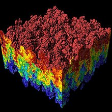

Computational fluid dynamics (CFD) is a branch of fluid mechanics that uses numerical
analysis and data structures to analyze and solve problems that involve fluid flows.
Computers are used to perform the calculations required to simulate the free-stream flow of the fluid,
and the interaction of the fluid (liquids and gases) with surfaces defined by boundary conditions.
With high-speed supercomputers, better solutions can be achieved, and are often required to solve the largest and most complex problems.
working together…
cfd learning